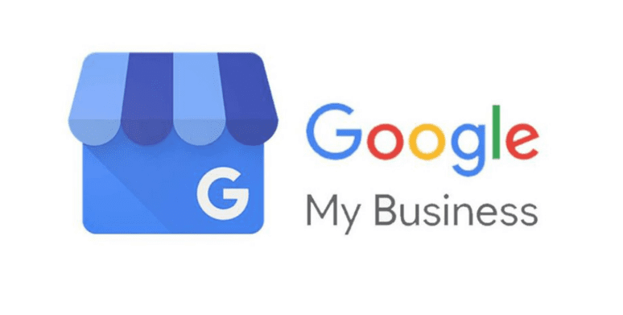
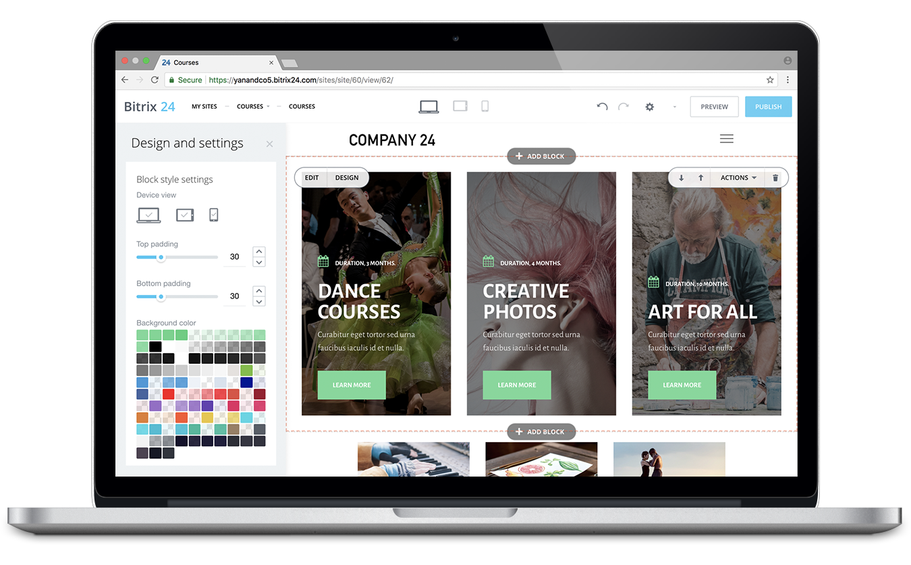
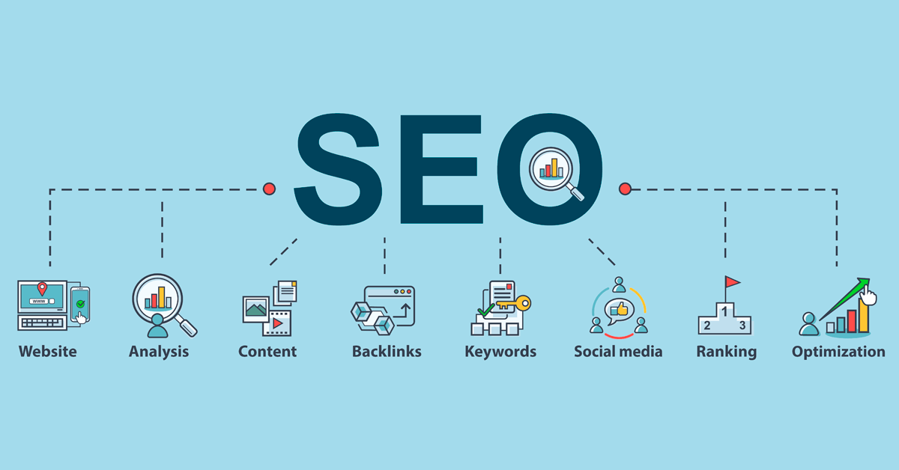

Cara Belajar Digital Marketing untuk Pemula dan Langkahnya

Belajar digital marketing memang membutuhkan panduan dan sumber yang kredibel, agar kamu tidak memahami konsep yang salah. Artikel ini akan membahas tentang Digital Marketing mulai dari pengertiannya, channel digital marketing yang perlu kamu kuasai, dan bagaimana cara untuk memulai belajar digital marketing.
Apa Itu Digital Marketing?

Hal pertama yang perlu dipahami adalah pengertian dari digital marketing itu sendiri. Digital marketing adalah usaha pemasaran produk dengan memanfaatkan media digital serta jaringan internet.
Jika pada zaman dahulu medium yang digunakan untuk melakukan pemasaran bergantung pada selembar flyer ataupun baliho, kini kita bisa dengan mudah memanfaatkan platform yang terdapat di gawai pintar untuk melakukan pemasaran digital.
Untuk alasannya sendiri, mengapa sih kita harus menggunakan strategi digital marketing untuk mengembangkan bisnis yang dijalani? Berikut beberapa alasan yang bisa kamu dapatkan:
- Digital marketing dapat diterapkan untuk semua jenis bisnis
- Mampu meningkatkan jumlah pendapatan dengan efektif
- Dapat menjangkau target pasar atau konsumen yang lebih spesifik
- Semua gadget bisa dipakai untuk menjalankan digital marketing
- Mampu membantu membangun brand bisnis yang dimiliki
Strategi & Channel Digital Marketing yang Efektif
Strategi yang dapat diimplementasikan dalam pemasaran digital sangatlah beragam. Untuk mencapai target yang maksimal, pastikan terlebih dahulu bahwasannya strategi digital marketing yang kamu pilih adalah strategi yang tepat mulai dari segi budgeting hingga sumber daya dalam pengaplikasiannya.
Berikut di bawah ini macam-macam strategi digital marketing yang bisa kamu coba.
1. Google My Business (GMB)
Google Bisnisku atau Google My Business merupakan salah satu layanan yang berguna untuk menampilkan profil bisnis secara instan di halaman hasil pencarian Google. Ada pun data yang ditampilkan antara lain adalah alamat, jam operasional, hingga rating bisnis.
Dengan menggunakan Google My Business, konsumen dapat menemukan lokasi bisnis kamu dengan lebih mudah. Kamu juga bisa memperlihatkan review terbaik dari konsumen sebagai media promosi. Adapun ketika menggunakan Google My Business, penting bagi kamu untuk memastikan penilaian konsumen terhadap bisnismu cukup baik sehingga membantu menampilkan persona bisnis yang baik pula.
2. Whatsapp for Business

Whatsapp punya basis pengguna yang besar di Indonesia. Kamu bisa memanfaatkan hal ini untuk digital marketing yang efektif. Namun kamu tidak disarankan untuk menggunakan jenis Whatsapp biasa. Gunakanlah Whatsapp for Business untuk akun bisnismu.
Kenapa harus Whatsapp for Business?
Pasalnya, aplikasi khusus tersebut punya banyak fitur untuk menampilkan profil bisnis, katalog produk, hingga fitur statistik pesan. Dengan menggunakan Whatsapp for Business juga dapat membantu kamu membalas pesan calon pembeli melalui fitur automated messaging.
3. Website
Website juga penting untuk menampilkan identitas sebuah bisnis secara online. Selain itu, website juga menjadi tanda profesionalitas suatu bisnis. Jika tak ingin repot membangun web dari nol, gunakan Content Management System (CMS) yang praktis seperti Wix ataupun Squarespace. Ketika membangun sebuah website, ada baiknya jika kamu membeli domain dan hosting sehingga nama bisnismu terdaftar sebagai domain .com atau .co.id yang mana dapat menunjukkan sisi profesionalitas website bisnismu.
4. Search Engine Optimization (SEO)
Strategi digital marketing yang satu ini masih berhubungan dengan website. Search Engine Optimization (SEO) diterapkan dengan tujuan untuk membuat website bisnis yang dimiliki muncul di halaman pertama hasil pencarian Google dengan kata kunci tertentu.
Di dalam SEO terdapat pula beberapa strategi atau teknik lainnya yang bisa kamu terapkan. Mulai dari riset keyword, link building, membuat konten yang menarik, dan lain sebagainya.
6. Copywriting

Terapkan copywriting untuk mendongkrak digital marketing bisnis kamu. Copywriting sendiri merupakan teknik pembuatan tulisan yang persuasif dan menarik supaya orang membeli produk yang ditawarkan. Contoh penerapan copywriting terdapat dalam caption singkat yang terdapat di media sosial Instagram.
7. Social Media Marketing

Strategi terakhir yang paling banyak diterapkan para pebisnis adalah social media marketing. Alasannya cukup masuk akal, dari data yang dilansir melalui Hootsuite (We Are Digital): Indonesian Digital Report 2020 pengguna aktif media sosial di Indonesia telah mencapai angka 160 juta jiwa dari total populasi lebih dari 270 juta jiwa. Dari data tersebut dapat ditarik kesimpulan bahwasannya menggaet calon konsumen melalui media sosial adalah salah satu cara terbaik yang bisa dilakukan dalam strategi pemasaran bisnis.
Langkah-langkah Memulai Digital Marketing untuk Pemula
Sebelum memulai menjalankan strategi digital marketing yang kamu pilih, lakukan pula beberapa langkah di bawah ini yang dapat menjadi panduan ketika akan memulai digital marketing.
1. Menentukan target pasar dan pilihan produk
Yang pertama kali harus dilakukan adalah memilih target pasar atau siapa yang akan menjadi konsumen kamu terlebih dahulu. Setelah mengetahui dan mengenali target pasar yang tepat, baru pelajari apakah produk yang akan kamu buat bisa menjadi solusi untuk mereka.
2. Memilih produk yang menjadi solusi terbaik
Langkah kedua dalam belajar digital marketing untuk pemula adalah, memilih produk yang ingin ditawarkan. Kamu perlu memikirkan apakah produk kamu adalah yang terbaik dan menjadi solusi? Jadi, pastikan bahwa produk yang akan kamu perkenalkan bisa menjawab permasalahan para calon konsumen.
3. Membangun website
Buat website segera setelah menemukan produk dan target pasar yang tepat. Marketplace memang pilihan yang bagus untuk bisnis. Namun situs itu tetap bukan milikmu sendiri. Jadi, sebaiknya bangun website milikmu sendiri.
4. Membangun media sosial
Website beres, sekarang saatnya membangun media sosial sebagai sarana promosi. Kamu bisa memilih dua di antara Instagram, Facebook, dan Twitter. Pilih yang menurutmu tepat dengan target pasar.
5. Gunakan SEO, SEM, dan Social Media Ads
Jangan lupa terapkan SEO, SEM, dan Social Media Ads untuk meningkatkan jangkauan digital marketing. SEO dipakai agar bisnismu tampil di laman pertama Google. SEM adalah layanan berbayar supaya bisnis kamu cepat dikenal. Social media ads juga punya fungsi sama seperti SEM.